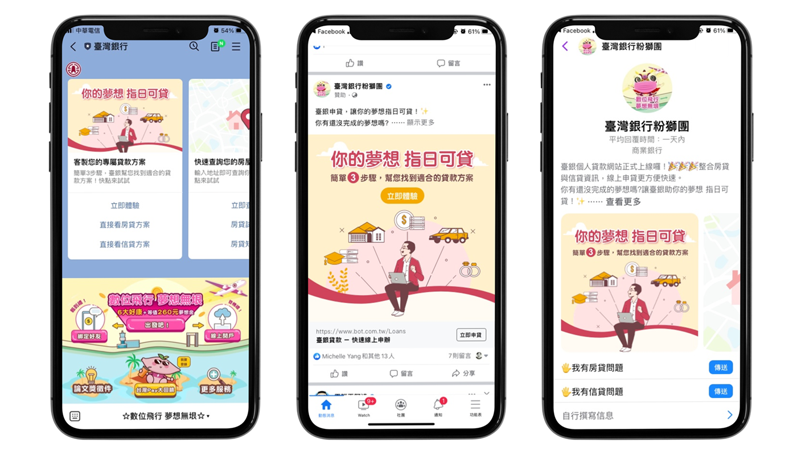

色彩規範
以既有的logo藍為主色，搭配黃色為輔色，使整體視覺呈現環保、陽光的形象。
臺銀希望能夠將貸款視為銀行主力，透過此次官網改版，讓網站擴大觸及率，達到成交的高效益。
將老品牌賦予新形象，創造新思維模式，隨著時代改變，消費行為也跟著改變，以使用者為中心，透過優化客戶體驗流程，讓借錢也可以借得很有尊嚴，貸款也可以是一種投資。
以既有的logo藍為主色，搭配黃色為輔色，使整體視覺呈現環保、陽光的形象。
將夢想化作行動，為了實現夢想、為了更好的生活，將貸款視為一種投資理財，貸著夢想到未來。
結合LINE、FB等聊天機器人，增進與消費者的互動，客製專屬貸款方案。
僅供作品展示用，實際資訊以官方為主。